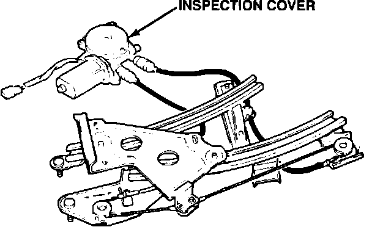

Rear Window - Will Not Go Up Fully
90acura01YEAR MODEL VIN APPLICATION
1990 INTEGRA LS & GS
4-DOOR
April 16, 1990
BULLETIN NO.
90-005
Rear Window Doesn't Go Up Fully
SYMPTOM
The rear window goes part way up, then stops. (The window motor keeps running, but the window stops moving.)
PROBABLE CAUSE
Several teeth on the window regulator drive gear are damaged.
CORRECTIVE ACTION
1. Remove the window regulator assembly from the door as described in the Body section of the service manual.
NOTE: Scribe around the regulator mounting nuts and bolts to show the original adjustment.

2. Remove the inspection cover from the window motor.
3. After verifying that the teeth on the drive gear are damaged, replace gear with the new type listed under PARTS INFORMATION. Apply a light coat of grease to the new gear before installing it.
4. Reinstall the window regulator assembly, then test the window operation before reinstalling the door panel.
PARTS INFORMATION
Window Regulator Gear: P/N 72716-SK8-J02
WARRANTY INFORMATION
In warranty: The normal warranty applies.
Out-of-warranty: Any repair performed after warranty expiration may be eligible for goodwill consideration by the District Service Manager. You must request consideration, and get the DSM's decision, before starting work.
Operation number: 829105 (left)
830105 (right)
Flat rate time: 0.9 hour per side
Failed P/N: 72750-SK8-J03
Defect code: 031
Contention code: B99